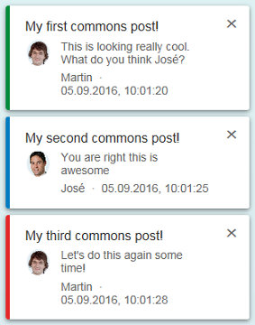

Introduction
Design Studio SDK Visualization Components by ConVista Consulting to enhance Dashboard KPI analysis and visualization with state-of-the-art maps technology, HTML editors to put some shiny comments, a nice hierarchy selection and collaboration-ready Chat component.
See also my blog entries on SCN regarding the provided Design Studio SDK components
| SCN Blog Entry | Impressions |
|---|---|
| Chat |
On the video we show how the component can be used. The chat component is tied to the currently loaded BEx query and maintains "chat-rooms" per query. I am logged in with two different users sending each other messages regarding the holdings query. |
Hierarchy SelectorUpdated on July 31 |
|
EasyCommentTrending |
|
| Google Maps & OpenStreetMap |
See also ConVista press release Update: You have to use a google api key now in all cases! |
Design Studio, Release 1.6 SP0 or higher
SAP BW, UNX or HANA as DataSources with a type of address data, which can then be mapped by Google’s geocoder API (e.g. Rheinauhafen 15, Cologne) or represent lat-long values right away.
Alternatively you could also use my custom data source providing test data for a quick hands-on: https://github.com/MartinPankraz/DesignStudioSDK-Components/blob/master/DesignStudioSDKComponentsPack_14.zip
NetWeaver or BO sever platform to deploy the extensions for production purposes (local mode works out of the box)
Google API Key that you can get from Google’s API Console (please note that local mode works without a key). The key will be used for Google's geocoder (used by both components). If you stick to the lat-long only version you don't need a key.
This component enables you to setup a fully blown chat component. For backend integration we recommend using the SCN SDK component WSPusher which is an implementation of the WebSocket standard also done by me. You can find the code and the component here:
https://github.com/org-scn-design-studio-community/sdkpackage
Look&Feel for different rendering modes (commons & m)
Commons mode |
 M mode |
Properties
| Property Name | Description |
|---|---|
| Chat Messages | This property allows you to define messages upfront manually. Furthermore it is used when messages are added to the component through Design Studio Scripting. It uses the new SDK type Array and Object. |
| Enable SAP Social (commons only) | Enable the UI5 social feature. This adds a "reply" text link to your messages, which opens an input dialog. The user's actions are exposed to the chat components events. This feature is only available if the component is run in commons mode. |
| Date Pattern | Define the date pattern using LDML format which is required by sap.ui.core.format.DateFormat. |
| Date Style | Define the date style using LDML format which is required by sap.ui.core.format.DateFormat. |
Methods
| Method Name | Description |
|---|---|
| createMessage | Create a message using current timestamp. |
| addMessage | Add a new message defining all properties yourself. |
| addMessageList |
Add a list of messages to the chat component. The JSON strings needs the following structure: [
The optional flag override enables you to decide if you want to append messages or replace with new ones. |
| getCurrentActiveMessageId | Get identifier (JSON attribute myId) of last selected chat item. |
| clear | Clear complete chat view. |
| deleteMessage | Delete single message by id from chat view. |
| deleteMessages |
Delete list of messages by array of ids from chat view. The JSON strings needs the following structure: ["00001", "2", "4d6e8c44-d22f-45f2-bfa0-a36507de2456"]
|
Events
| Event Name | Description |
|---|---|
| On Reply (commons mode only) | This even fires if send button the SAP social inpu dialog is hit. This event is only active if the component is run in commons mode. |
| On Message Close/Select | This event fires in case an item of the chat component is clicked. It makes sense to call the method getCurrentActiveMessageId along with it to learn which item was clicked. |
This component enables you to put comments onto your dashboard.
Properties
You can customize the commentary editor toolbars using the property Toolbar Settings. For the Document toolbar you can even decide on item level. Please note that the save button will always be present because it is tied to the On Save Button Clicked event.
Events
The On Save Button Click Event exposes the functionality of the toolbar save button. That way you can put DesignStudio scripting which executes after clicking the editor's save button. How to integrate with your backend using this event is discussed in the SCN blog entry already mentioned above.
SAP Backend Integration
You can find directions on how to integrate with SAP backend on my following SCN entries:
This component enables you to consume BW hierarchies exposed through data sources. One single root node is a minimum requirement for the hierarchy. Otherwise only the branch for the first node will be shown.
Properties
| Property Name | Description |
|---|---|
| Navigation Mode | Use Paginator or Scrollbar in case of display overflow |
| Visible Row Count | Decide how many rows shall be displayed initially |
| Visible Row Count Mode | Decide if the component shall stretch automatically (auto), stay fixed (fixed) or be flexible (interactive) |
| Row Height in px | Define the amount of pixel to be used for each row height |
| Level for Expand All Option | Define the level to which the tree shall expand on click of the top right button |
| Expand first Level on Start | Decide if the root node shall be collapsed at start or not |
| Display row lines | Decide if you want to see the table row lines or not |
| Hide Key on KEY_TEXT display | In order to be able to use the method getSelectionKeysBexReady for external keys you will need to enable key_text or text_key as display option on your data source. The reason is that the external representation of the key is transmitted to the SDK component only then. Having done that you might still want to show only the text on the tree. This option will allow you to do so. |
Important Methods
| Method Name | Description |
|---|---|
| getSelectionKeysBexReady | You have to decide if you want the shortened internal or the external representation of the key (please not my comment regarding that above). If you need the full technical key (e.g. 0HIERARCHY/0HIER_NODE/1234) flag the optional second parameter completeKey with true. |
| getFilterExtBexReady | This method will return a string which can be fed into Design Studio Scripting method setFilterExt right away. It even takes care of SAP's special node syntax (e.g +OPERATIVE CASH FLOWS(Text Node)) |
Events
The On CheckBox Selected Event fires every time the user hits a checkbox on the tree.
The following section covers the properties, functions and events of our google maps and OpenStreetMap implementation. Our OSM component is deprecated by now because SAP offers a standard version.
Maps Properties
DataBinding group
Specify the DataSource containing the data to be visualized with maps extension here. Please note that SAP has specified a limit of 10,000 data cells that can be transferred to SDK extensions (see SAP Design Studio Developer Guide on that matter).
Geo Database group
CSS Class
Name your custom CSS class to override default behavior
Address DB URL
Specifies URL where Apache CouchDB is running. Please note that you might need to set CORS settings due to CROSS ORIGIN request policy in browsers.
Default is http://127.0.0.1:5984/ [your database name].
Use GET to gather info and POST to add geo data. Just ask me if you need further information.
Address DB URL Extension
URL extension for REST interface to read geo data bulk-wise from Apache CouchDB. Default is:
/_all_docs?include_docs=true
Google API Key
This field contains your Google API key (This is now a must have even for local mode!)
You can leave all of the above entries empty if you want to use the new lat-long feature.
Display group
Address Dimension
Specifies the dimension (or column name) in your DataSource, containing the address data, for example “Rheinauhafen 15, Cologne”. If you want to use the lat-long feature leave it empty!
Latitude Dimension
Specifies the dimension (or column name) in your DataSource, containing the latitude data, for example “50.927276”. You will need to look up the key figure/characteristic's name on the data sources initial view
Longitude Dimension
Specifies the dimension (or column name) in your DataSource, containing the longitude data, for example “6.966115”. You will need to look up the key figure/characteristic's name on the data sources initial view
Clustering Max Zoom
Specifies the maximum zoom level until when to use the clustering mechanism. If you zoom further in clustering will be switched off and activated again on zoom out.
Marker-Content Dimension
Specifies the dimension (or row/column name) in your DataSource, containing the data to be displayed when a marker (not a cluster) is clicked
Date Dimension
Specifies the dimension (or row/column name) in your DataSource, containing the dates associated with your key figures
Keyfigure1 Name
Specifies the dimension (or row/column name) in your DataSource, containing your first key figure
Keyfigure1 (t-1)
This dimensions specification enables users to display the key figure value developments over time. For example: Actual cost | Actual cost (last year) €1234,56 | €1000,00 Trends will be displayed by green or red arrows in combination with corresponding percentages next to a clustered marker.
Keyfigure1 Clustering Steps
Specifies the value limits for different display behavior. For example, green (10), yellow or red (500) cluster marker. Example input: ["10","50","100","200","500"]. This is also customizable via CSS.
Keyfigure2 Name
Specifies the dimension (or row/column name) in your DataSource containing your second key figure
Keyfigure2 (t-1)
Works accordingly to Keyfigure1
Keyfigure2 Clustering Steps
Works accordingly to Keyfigure1
Keyfigure Variation Tolerance (%)
Specifies the tolerance (in percentage) used to suppress trend display. Typically users want a 5% discrepancy interval that should be treated as stagnation.
Methods
The following methods are available in SAP Design Studios Script Editor for the extension components.
String getAddress()
Returns address information associated with the last clicked marker. (You should call this one within the event handler for marker clicked.)
String getClusterSelection(String dimension)
Returns the information specified by the method argument dimension (e.g. “Date”) that is associated with the last clicked cluster (you should call this one within the event handler for cluster clicked) as a JSON object. For example: {“dimension_name”: [“20140101”,”20140102”,…]}
String getMarkerSelection(String dimension)
Returns the information specified by the method argument dimension (e.g. “Date”) that is associated with the last clicked marker (you should call this one within the event handler for marker clicked) as a JSON object. For example: '{“dimension_name”: [“20140101”,”20140102”,…]}'
String getClusterSelectionFilterData(String dimension)
Returns the information (without dimension name, just raw data) specified by the method argument dimension (e.g. “Date”) that is associated with the last clicked cluster (you should call this one within the event handler for cluster clicked) as a JSON object. For example: [“20140101”,”20140102”,…] -> This can be used for chart filtering for instance.
String getMarkerSelectionFilterData(String dimension)
Returns the information (without dimension name, just raw data) specified by the method argument dimension (e.g. “Date”) that is associated with the last clicked marker (you should call this one within the event handler for marker clicked) as a JSON object. For example: [“20140101”,”20140102”,…] -> This can be used for chart filtering for instance.
void setCurrentKeyfigureDisplay(String keyFigureName)
Changes the key figure display setting for all of the clusters during runtime. This way you can control programmatically which key figure is shown to the user.
String getCurrentKeyfigureDisplay()
Returns the current key figure name used to display key figures on clusters.
void centerMap(lat, lon, zoom)
Center map on lat/lon and zoom level. For example DATAMAP_1.centerMap(-52.31041, -63.62642, 8);
float getCenterLatitude
Get latitude of last center specification.
float getCenterLongitude
Get longitude of last center specification.
int getClusteringMaxZoom
Retrieve max zoom level setting
void setClusteringMaxZoom
Set max zoom level setting
int getZoom
Get current maps zoom level
Events
On Marker Clicked
This event occurs in case a plain marker (not a clustered one) is clicked. This action opens a message box on the map displaying the data specified in property Marker-Content Dimension and enables you also to handle marker information (for example address, ID, etc.) outside the extension e.g. for further filtering in charts.
On Cluster Clicked
This event works the same way but on cluster level with the exception that no message box is displayed. The clicked cluster is highlighted instead.
Geo Coding and Geo-Data Persistence
Google’s geo coding API can be used for free to a certain degree. In order to lighten workload on your account we have introduced two possible ways to store your geo-referenced data that has been determined by the API at first run. The first approach is by installing an Apache CouchDB instance and pointing the extension to the database URL. Secondly you can use current browser’s internal IndexedDB which sets up a full blown database that is tied to your domain. With IndexedDB, please note that for development purposes, you might need to use a static jetty port, as that is already part of the domain. Otherwise you might set up a database instance with every program execution during SDK development. This is no problem outside the SDK. You could also possibly use a different RESTful and JSON-capable database instead of CouchDB. Just give me a hint if you need further information or assistance on that matter.
If you are using the new lat-long feature the above section regarding geo coding and data persistence doesn't apply to you
How it works (short version)
On first run the app logic will look for key figures and their corresponding description dimensions in the attached DataSource. Setting up all of your markers and clusters will take some time as the geocoder restricts traffic while using the free plan. Persistent storage of your geo data will make sure you don’t call the API more than once for every address entry in your DataSource (see section above). Any update, for example applying an arbitrary filter, to the underlying DataSource will also be propagated to the extension and impact on your view immediately.
Again, if you are using the new lat-long feature this section doesn't apply to you. Your makers will show up right away.
ConVista OpenStreetMap
This extension uses OpenStreetMap (OMS) as map implementation and the Leaflet framework to work with the map itself. In contrast to Google Maps, OMS enables you to host your own tiles server. That way you can be independent from external resources and even work offline.
Please note the new lat-long feature is not implemented for my OpenStreetMap because the SAP geomap handles that rather nicely already.
ConVista GoogleMap
This extension uses Google Maps as map implementation and the Google Maps JavaScript API v3 to work with the map itself. Google StreetView is also available. As of today (12th of October 2015) you can use lat-long values provided by your data sources just like with the SAP geomap.
Functionality to display trends in key figure development over time, next to the clusters is not yet implemented. This is only available with OSM right now.
Please note that you shouldn’t use both components at a time in one Dashboard. This is a result of the mechanism that enables us to insert your Google API key at design time as you specified it in the component’s properties. If you can't help it contact me for a quick workaround.
Test data out of the box with custom data source (DS 1.4+ required!)
If you don't have any geo-referencable data ready to display on our maps extensions or you just want to get a quick hands-on, donwload my custom data source MapsExampleDataSource from https://github.com/MartinPankraz/DesignStudioSDK-Components and include it to your project and the maps extensions as usual.
Trouble Shooting Maps
Please note that Design Studio's background processing functionality in combination with hideLoadingState on one of the maps will result in strange marker update behavior. It seems like the DS framework doesn't update the extension's hooks correctly. You may, however use background processing without hiding loading state of the map just fine.
Installation
-
1) You have two options which complement Design Studio SDK install features. The first one is online and the second offline:
Online (recommended) Offline Copy provided installable link below http://martinpankraz.github.io/ConVista-DS-SDK-Visualizations/releases Download the ConVistaMapsExtension.zip ZIP file. You may do this by clicking the Download ZIP button. Please note that you will need to extract the container zip first before you can reach the ConVistaMapsExtension.zip - 2) Click Tools in Design Studio > install Extension to Design Studio…
- 3) For offline Choose “archive” as installation source (navigate to ZIP file), for online you can just paste the link you copied before and continue.
- 4) Accept license and restart the Design Studio Client
- 5) Don't forget to update the SDK extensions on your server if necessary
- 6) Have fun using our extensions
- Meet me at ConVista Infoday or our world renowned carnival (traditional German costume festival) event in Cologne to chat about our Design Studio and Dashboarding ideas :-)
License
This software product is licensed under the Apache License 2.0.
Final Words
Feel free to contact me for any advice on usage, installation, and plain trouble shooting or a chat about the awesomeness of Design Studio SDK if you like. Feedback and improvement suggestions are also very welcome.